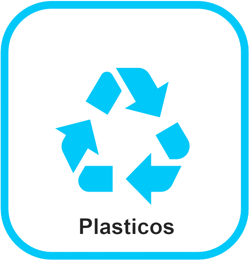
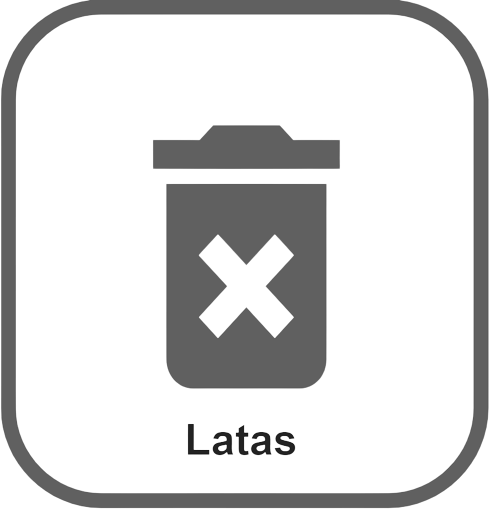
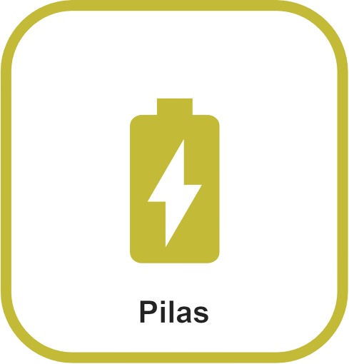
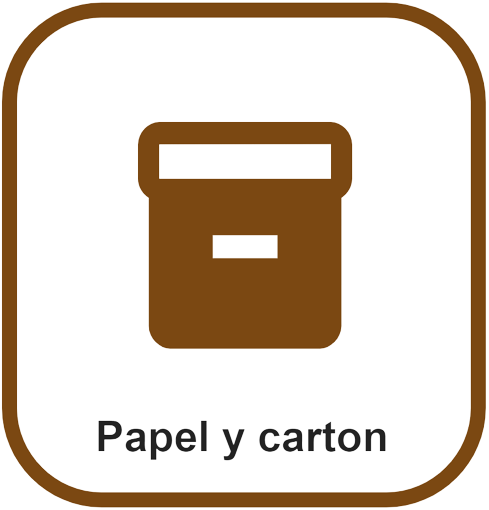
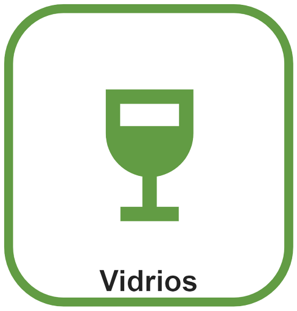

<ion-header>
  <ion-toolbar>
    <ion-buttons slot="start">
      <ion-back-button defaultHref="/menu"></ion-back-button>
    </ion-buttons>
  </ion-toolbar>
</ion-header>

<ion-content class="background">

  <ion-title size="large">Como Reciclar</ion-title>

  <div class="container">

    <ion-button class="plasticos" routerLink="/plasticos">
      
    </ion-button>

    <ion-button class="latas" routerLink="/latas">
      
    </ion-button>

    <ion-button class="pilas" routerLink="/pilas">
      
    </ion-button>

    <ion-button class="papelcarton" routerLink="/papel-carton">
      
    </ion-button>

    <ion-button class="vidrios" routerLink="/vidrios">
      
    </ion-button>

  </div>


</ion-content>
